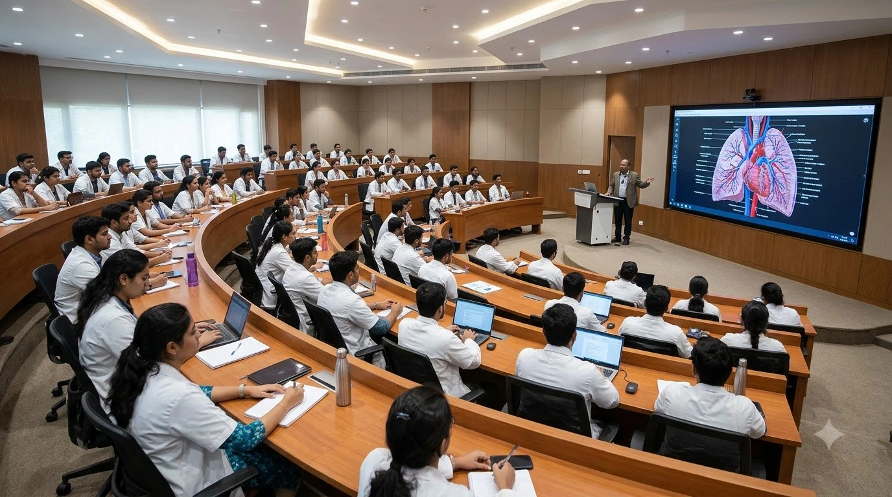

Explore Our Medical Academic Programs
Discover undergraduate MBBS curriculum structures, postgraduate medical MD pathways, and MS surgical specializations grounded in clinical competence and scientific inquiry.
Bachelor of Medicine & Bachelor of Surgery (MBBS)
An undergraduate medical education program designed to provide foundational medical knowledge, scientific understanding, and clinical learning.
Curricular Framework & Duration
The MBBS curriculum spans a standard total of 5.5 years, encompassing 4.5 academic years of phased modular instruction followed by 1 full calendar year of Compulsory Rotating Medical Internship (CRMI).
The curriculum follows the Competency-Based Medical Education (CBME) system, which emphasizes integrated vertical and horizontal learning, early clinical exposure (ECE), self-directed study, and attitude, ethics, and communication (AETCOM) training.
Academic Duration
4.5 Academic Years (9 Semesters)
Internship
1 Year Compulsory Rotations (CRMI)

MBBS Curriculum Phase Breakdown
Illustrative Academic Progression across Indian Preclinical, Paraclinical, and Clinical Phases
| Phase | Duration | Core Disciplines Covered | Clinical & Practical Focus |
|---|---|---|---|
| Phase 1: Pre-Clinical | 1 Year (2 Semesters) | Human Anatomy, Physiology, Biochemistry | Cadaveric dissection, microscopic histology, physiological experiments, early clinical exposure (ECE). |
| Phase 2: Para-Clinical | 1.5 Years (3 Semesters) | Pathology, Microbiology, Pharmacology | Histopathological slide diagnosis, bacteriological cultures, pharmacological therapy, clinical ward visits. |
| Phase 3 Part 1: Clinical | 1 Year (2 Semesters) | Community Medicine, Forensic Medicine, Ophthalmology, ENT | Epidemiological surveys, rural health visits, ocular exams, hearing assessments, medico-legal autopsy observations. |
| Phase 3 Part 2: Clinical | 1 Year (2 Semesters) | General Medicine, General Surgery, Ob-Gyn, Paediatrics, Orthopaedics | Comprehensive bedside ward rounds, surgical case demonstrations, labour room observation, emergency triage. |
| Internship (CRMI) | 1 Calendar Year | Rotational Postings across all Core Specialties | Hands-on patient care under supervision, casualty duties, night postings, rural primary health centre (PHC) residency. |
MD Programs (Doctor of Medicine)
Postgraduate medical education pathways across different medical specializations designed for advanced clinical diagnosis and non-operative care.

Postgraduate Residency Training
Postgraduate MD programs in India typically span three academic years of rigorous full-time clinical residency. Residents take on progressive clinical responsibilities under faculty mentorship.
Key training facets include inpatient care, specialized outpatient clinics, clinical audit presentation, mortality meetings, journal club discussions, and mandatory submission of a research dissertation (thesis).
General Medicine, Paediatrics, Dermatology, Anaesthesiology, Radiology, Pathology, Biochemistry, and Community Medicine represent generic illustrative categories.
MD – General Medicine
Comprehensive adult medicine, intensive care unit (ICU) management, cardiology, pulmonology, and complex differential diagnosis.
MD – Paediatrics
Neonatal intensive care (NICU), pediatric developmental disorders, childhood infectious diseases, and immunization strategies.
MD – Dermatology
Clinical dermatology, cutaneous manifestations of systemic disease, venereology, and dermatological diagnostic techniques.
MD – Anaesthesiology
General anaesthesia, regional nerve blocks, acute pain management, surgical perioperative monitoring, and critical resuscitation.
MD – Radiology
Diagnostic imaging interpretation including conventional radiography, ultrasonography, computed tomography (CT), and MRI modalities.
MD – Pathology
Surgical histopathology grossing, cytological examination, immunohistochemistry, and clinical laboratory quality standards.
MS Programs (Master of Surgery)
Postgraduate surgical education pathways focused on surgical knowledge, clinical practice, operative skills development, and professional integrity.
Operative Rigor & Surgical Simulation
The Master of Surgery (MS) degree requires three years of specialized surgical apprenticeship. Surgical trainees develop technical dexterity, tissue handling techniques, and operative decision-making.
Surgical residents maintain verified operative logbooks tracking performed, assisted, and observed procedures, alongside hands-on emergency trauma management and post-operative intensive care.
Categories include General Surgery, Orthopaedics, Ophthalmology, Obstetrics and Gynaecology, and ENT (Otorhinolaryngology).

MS – General Surgery
Abdominal surgery, laparoscopic procedures, endocrine surgery, trauma resuscitation, and advanced wound management.
MS – Orthopaedics
Trauma fracture fixation, joint arthroplasty, sports medicine injuries, pediatric orthopaedics, and musculoskeletal anatomy.
MS – Ophthalmology
Microscopic cataract surgery, corneal pathology, glaucoma evaluation, retinal diagnostics, and visual field analysis.
MS – Obstetrics & Gynaecology
Maternal-fetal medicine, high-risk obstetrics, normal and caesarean deliveries, and gynecological surgical interventions.
MS – ENT (Otorhinolaryngology)
Ear microsurgery, endoscopic sinus procedures, head & neck oncology, and upper airway emergency management.
Surgical Simulation & Logbooks
Dry lab suturing techniques, virtual knot-tying simulations, and systematic procedure documentation.
All program descriptions on this website represent general educational information. Do not imply that these programs are actually offered, approved, or accredited by a specific institution. Actual program availability, recognition, seat intake, and eligibility depend strictly on applicable regulatory approvals and institutional details.